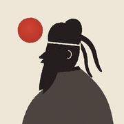
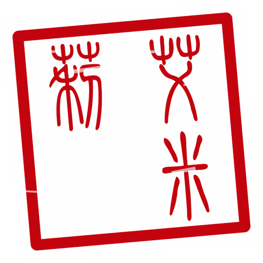
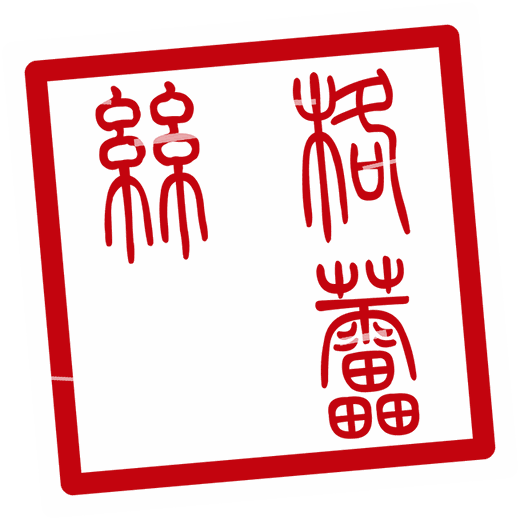
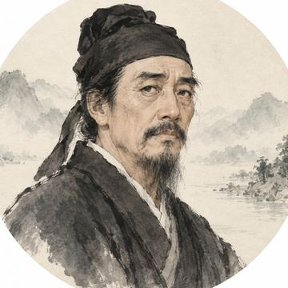
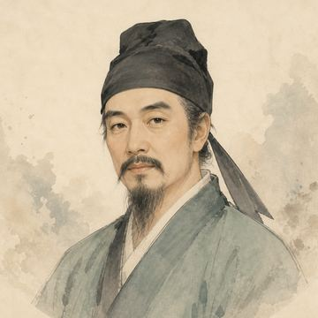

Translation and commentary
Read the original Chinese next to a plain English translation, then commentary on the imagery, the history and why the lines still matter.

Ink & Verse Get the appClassical Chinese poetry · iPhone
Read more than 600 Tang poems and Song lyrics in the original Chinese, with clear English translations, commentary on each poem, and guqin music while you read.
Poem of the day
A new poem each morning, and 600 more to browse.
The collection
The Three Hundred Tang Poems and the Three Hundred Song Lyrics have shaped how China reads poetry for centuries. Ink & Verse gathers both, so English readers can meet the same poems, in the same words.
Inside the app
No feeds or streaks. Each poem opens on its own page, and you read it at your own pace.
Read the original Chinese next to a plain English translation, then commentary on the imagery, the history and why the lines still matter.
A new poem waits on the home screen each morning. Read it with your coffee, or tap Random for something unexpected.
Each poet has a profile with their life, courtesy name and era, and links to every poem of theirs in the collection.
Play recordings of the guqin, the seven-string zither of the scholar’s study, while you read. Every track is credited to its performer.
Your seal
Chinese poets and painters signed their work with a carved seal. Ink & Verse makes one for you. Type your name, and the app finds Chinese characters that sound like it and cuts them in ancient seal script.


Today’s poem
A sample of how a page reads in the app, with the original, the translation and a short note.
竹里馆
独坐幽篁里
弹琴复长啸
深林人不知
明月来相照
Wang Wei · Tang dynasty · Five-character quatrain
Alone in the deep bamboo grove, I play my zither and whistle at length. No one knows I am here in the forest; only the bright moon comes to shine upon me.
Bamboo, music, a whistle, and moonlight create a quiet world complete in itself. The speaker is alone but not bereft: the moon becomes a companion.
The poets
Each poet has a portrait, a short biography and every poem of theirs in the collection.
701–762 · Tang
The “Poet Immortal” of the High Tang, known for his unrestrained imagination: mountains, moonlight and wine.

712–770 · Tang
He recorded a turbulent age and its people with moral force, and wrote movingly of friendship, family and home.

701–761 · Tang
A poet and painter whose landscapes are tranquil and spacious, with the clarity of a picture and the stillness of Zen.
1037–1101 · Song
A master of poetry, lyric, prose and calligraphy, ranging from open-hearted grandeur to close attention to daily life.
c. 1084–1155 · Song
The great woman lyricist of China. Her early songs are light and vivid, and her later work deep and restrained.
1140–1207 · Song
A soldier-poet who rode south to fight for the Song. His bold, generous lyrics pair him with Su Shi.
Questions
No. Every poem has an English title, a plain English translation and commentary on its imagery and history. The original Chinese sits beside it for anyone who wants to follow the characters.
The two classic anthologies: the Three Hundred Tang Poems and the Three Hundred Song Lyrics. That is more than 600 works by Li Bai, Du Fu, Wang Wei, Su Shi, Li Qingzhao, Xin Qiji and many others.
The app is free to download, and poems by the best-known poets are free to read. Ink & Verse Pro unlocks every poem and poet in the collection. You can choose a monthly or yearly subscription, or a one-time lifetime purchase.
Ink & Verse is an iPhone app, available on the App Store.
Still have a question, found a mistake in a translation, or want to share an idea? Email raowenjieszu@gmail.com. I read and reply to every message. You can also write from Settings in the app.
欲穷千里目，更上一层楼
“To see a thousand miles farther, climb one more storey.” — Wang Zhihuan